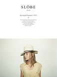
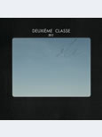

2012年春夏ｶﾀﾛｸﾞ

ｼｰｽﾞﾝﾃｰﾏ「Dispatch from Color」のｽﾀｲﾘﾝｸﾞやｶﾗﾌﾙなｱｲﾃﾑをご紹介。ﾏｽｷｭﾘﾝやﾌｪﾐﾆﾝﾃｲｽﾄのｱｲﾃﾑをIENA SLOBEらしいﾐｯｸｽｺｰﾃﾞｨﾈｰﾄで表現しています。是非、お楽しみ下さい。(2012.03.08)EDIFICEの今ｼｰｽﾞﾝを象徴するCOLOR IVYを軸に、ﾌﾞﾗﾝﾄﾞのﾙｰﾂとなる都市、ﾌﾗﾝｽ、ﾊﾟﾘで撮影を敢行。更に、表紙を飾るｲﾗｽﾄはﾌﾗﾝｽを代表するｲﾗｽﾄﾚｰﾀｰ"Pierre Le-Tan"に依頼し、ｽぺｼｬﾙﾓﾃﾞﾙとしてｸﾞﾗﾌｨﾃｨｱｰﾄの先駆者"Andre"を起用。細部に亘りﾌﾗﾝｽにこだわった一冊に仕上がっております。(2012.03.07)

「CINEMA ACTOR」第二弾は「Serge Gainsbourg & Jane Birkin」Janeのｴｯｾﾝｽを取り入れたﾍﾞｰｼｯｸｱｲﾃﾑの着こなしをぜひお楽しみください。(2012.03.05)今回のｶﾀﾛｸﾞは一人の女性のある1日をｲﾒｰｼﾞ。朝の準備や、お仕事、ｱﾌﾀｰ5やｵﾌの日のｼｮｯﾋﾟﾝｸﾞなど様々なｼﾁｭｴｰｼｮﾝでの着こなしをご覧頂けます。(2012.03.05)
2012年春の新作をﾒﾝｽﾞ・ﾚﾃﾞｨｰｽ・ﾕﾆｾｯｸｽと、さりげないﾄﾚﾝﾄﾞ要素を取り入れたｱﾒﾘｶﾝｽﾀｲﾙでご覧いただけます。(2012.03.02)